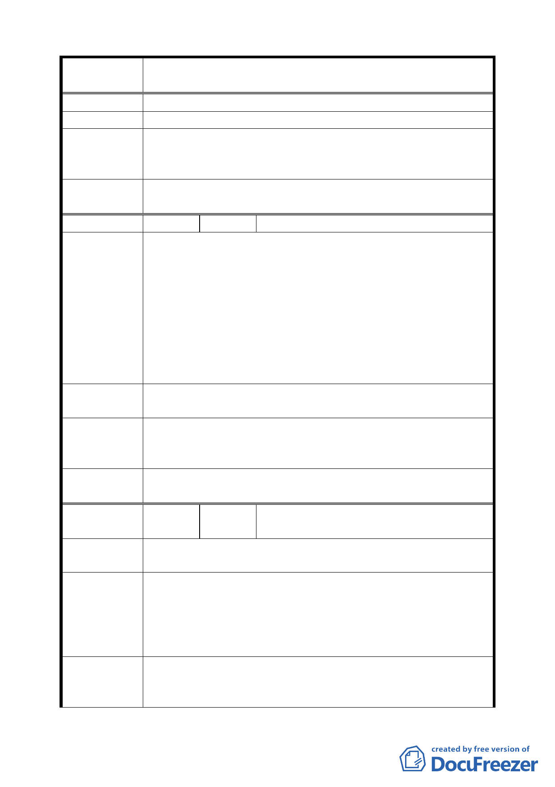

案 名 臺北市文山區都市計畫通盤檢討（主要計畫）案
建 議 辦 法 變更育幼院文教及機關用地為公園、住宅區。
專案小組
審 查 結 論 因本陳情意見涉及軍方土地，移請市府另案專案處理。
（94.7.7）
委員會議
決議
依專案小組審查結論辦理。
編 號 １９ 陳情人 國防部陸軍總司令部（09430102300）
建議位置：木柵段三小段 353、362、364 地號等 3 筆土地。
建議理由：
本部列管臺北市「木柵營區」座落於文山區木柵段三小段
陳情理由
（主木 2）
353、362、364 地號土地，其中 353 地號欲納入都市計畫變
更為「社會福利設施」用地，惟該地前奉行政院 82 年月 24
日台 82 財 15879 號函核定辦理自建眷宅，本部亦於 93 年 5
月 10 日與「保證責任中華民國國軍軍眷住宅公用合作社」簽
訂「委託辦理重建工程協議書」，現該社已完成初步規劃，正
進行細部設計作業，預定 94 年 4 月份申掛建照執照。
建議辦法
撤銷文山區木柵段三小段 353 地號土地作為「社會福利設施」
案，維持原第 3 種住宅區。
專案小組
審查結論
（94.11.24）
依社會局意見，基於軍方奉核有眷改計畫，社會局同意撤案，
故維持原計畫。
委員會議
決議
依專案小組審查結論辦理，並刪除本案「主木 2」。
編
號 ２０
陳情人
國防部陸軍總司令部工兵署
（09430082600）
陳情理由
（主木 2）
位置：文山區木柵段三小段 353-2 地號。
如本地號土地由「住宅區」變更為「社會福利用地」，因國有
地業奉行政院核定納入國軍老舊眷舍改建基金處分財源，目
建 議 辦 法 前計畫辦理標售及移交相關作業，仍須依「各級政府機關互
相撥用公有不動產之有償與無償劃分原則」之規定，以有償
撥用方式辦理。
專案小組
審 查 結 論 同編號 19。
（94.11.24）
一三